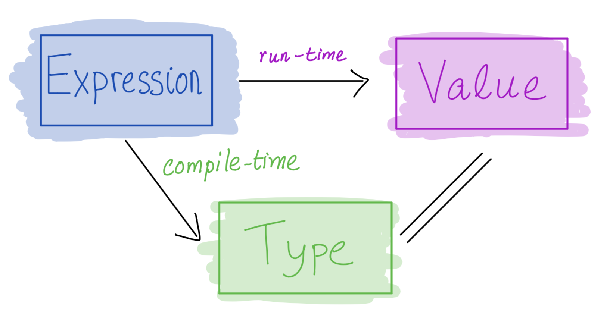

Writing Applications
Lets write the classic “Hello world!” program.
For example, in Python you may write:
def main():
print "hello, world!"
main()and then you can run it:
$ python hello.py
hello world!
Haskell is pure
Haskell programs don’t do things!

A program is an expression that evaluates to a value (and nothing else happens)
A function of type
Int -> Intcomputes a single integer output from a single integer input and does nothing elseMoreover, it always returns the same output given the same input (referential transparency)
Specifically, evaluation must not have any side effects
change a global variable or
print to screen or
read a file or
send an email or
launch a missile.
But… how to write “Hello, world!”
But, we want to …
- print to screen
- read a file
- send an email
Thankfully, you can do all the above via a very clever idea: Recipe
Recipes
This analogy is due to Joachim Brietner
Haskell has a special type called IO – which you can think of as Recipe
type Recipe a = IO aA value of type Recipe a
is a description of a computation that can have side-effects
which when executed performs some effectful I/O operations
to produce a value of type
a.
Recipes have No Side Effects
A value of type Recipe a is
- A description of a computation that can have side-effects
(L) chocolate cake, (R) a sequence of instructions on how to make a cake.
They are different (Hint: only one of them is delicious.)
Merely having a Recipe Cake has no effects! The recipe
Does not make your oven hot
Does not make your your floor dirty
Only One Way to Execute Recipes
When executing a program, Haskell looks for a special value:
main :: Recipe ()This is a recipe for everything a program should do
- that returns a unit
() - i.e. does not return any useful value
The value associated with main is handed to the runtime system and executed

The Haskell runtime is a master chef who is the only one allowed to produce effects!
Importantly:
A function of type
Int -> Intstill computes a single integer output from a single integer input and does nothing elseA function of type
Int -> Recipe Intcomputes anInt-recipe from a single integer input and does nothing elseOnly if I hand this recipe to
mainwill any effects be produced
How to write an App in Haskell
Make a Recipe () that is handed off to the master chef main.
maincan be arbitrarily complicatedcomposed of smaller sub-recipes
A Recipe to Print to Screen
putStrLn :: String -> Recipe ()The function putStrLn
- takes as input a
String - returns as output a
Recipe ()
putStrLn msg is a Recipe () - when executed prints out msg on the screen.
main :: Recipe ()
main = putStrLn "Hello, world!"… and we can compile and run it
$ ghc --make hello.hs
$ ./hello
Hello, world!
QUIZ: Printing multiple things
Suppose I want to print two things e.g.
$ ghc --make hello.hs
$ ./hello2
Hello!
World!Will this work?
main = (putStrLn "Hello!", putStrLn "World!")A. Yes!
B. No, there is a type error!
C. No, it compiles but produces a different result!
A Collection of Recipes
Is just … a collection of Recipes!
recPair :: (Recipe (), Recipe ())
recPair = (putStrLn "Hello!", putStrLn "World!")
recList :: [Recipe ()]
recList = [putStrLn "Hello!", putStrLn "World!"]… we need a way to combine recipes!
Combining? Just do it!
We can combine many recipes into a single one using a do block
foo :: Recipe a3
foo = do r1 -- r1 :: Recipe a1
r2 -- r2 :: Recipe a2
r3 -- r3 :: Recipe a3(or if you prefer curly braces + semicolons to indentation)
foo = do { r1; r2; r3 }The do block combines sub-recipes r1, r2 and r3 into a new recipe that
- Will execute each sub-recipe in sequence and
- Return the value of type
a3produced by the last reciper3
Combining? Just do it!
So we can write
main = do putStrLn "Hello!"
putStrLn "World!"or if you prefer
main = do { putStrLn "Hello!"; putStrLn "World!" }- looks like imperative code
- but actually it’s just syntactic sugar for some HOFs
- (we’ll figure that out in the Monad lecture)
EXERCISE: Combining Many Recipes
Write a function called sequence that
- Takes a non-empty list of recipes
[r1,...,rn]as input and - Returns a single recipe equivalent to
do {r1; ...; rn}
sequence :: [Recipe a] -> Recipe a
sequence rs = ???When you are done you should see the following behavior
-- Hello.hs
main = sequence [putStrLn "Hello!", putStrLn "World!"] and then
$ ghc --make Hello.hs
$ ./hello
Hello!
World!
Using the Results of (Sub-) Recipes
Suppose we want a function that asks for the user’s name
$ ./hello
What is your name?
Nadia # <<<<< user enters
Hello Nadia!We can use the following sub-recipes
-- | read and return a line from stdin as String
getLine :: Recipe String
-- take a string s, return a recipe that prints s
putStrLn :: String -> Recipe () But how to
- Combine the two sub-recipes while
- Passing the result of the first sub-recipe to the second.
Naming Recipe Results via Bind
You can write
x <- recipeto bind the result of executing recipe to x
xcan be used to refer to the result in later code- looks like imperative assignment
- but again, it’s just syntactic sugar for some HOFs
Naming Recipe Results via Bind
Lets, write an app that asks for the user’s name
main = do putStrLn "What is your name?"
name <- getLine
putStrLn ("Hello " ++ name ++ "!")Which produces the desired result
$ ./hello
What is your name?
Nadia # user enters
Hello Nadia!
EXERCISE
Modify the above code so that the program repeatedly asks for the users’s name until they provide a non-empty string.
When you are done you should get the following behavior
$ ghc --make hello.hs
$ ./hello
What is your name?
# user hits return
What is your name?
# user hits return
What is your name?
# user hits return
What is your name?
Nadia # user enters
Was that so hard Nadia???
EXERCISE
Modify your code to also count how many times you had to ask the user for their name:
$ ghc --make hello.hs
$ ./hello
What is your name?
# user hits return
What is your name?
# user hits return
What is your name?
# user hits return
What is your name?
Nadia # user enters
It took you 4 tries Nadia!
Recipes with Results
Let’s write a function that asks the user maximum n times, and if they fail to provide a non-empty string, it returns a default value d:
main :: Recipe ()
main = do name <- askMany 3 "dummy"
putStrLn $ printf "Hello %s!" name
askMany :: Int -> String -> Recipe String
askMany = ???
To return a result from a recipe, use the return function!
askMany :: Int -> String -> Recipe String
askMany 0 d = return d
askMany n d = do putStrLn "What is your name?"
name <- getLine
if null name
then askMany (n-1) d
else return name
That’s all about IO
You should be able to implement build from Directory.hs
Using these library functions imported at the top of the file
import System.FilePath (takeDirectory, takeFileName, (</>))
import System.Directory (doesFileExist, listDirectory)The functions are
takeDirectorytakeFileName(</>)doesFileExistlistDirectory
hoogle the documentation to learn about how to use them.